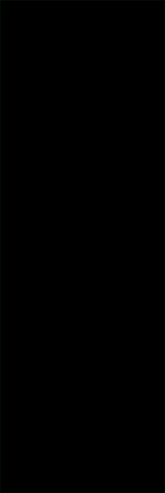
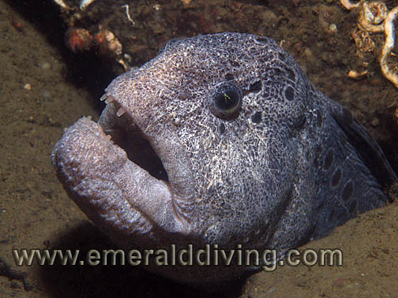
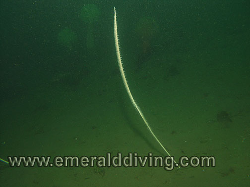
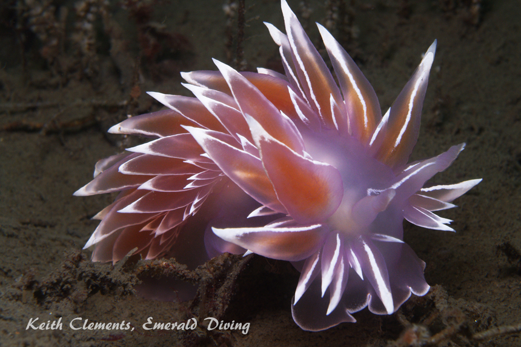
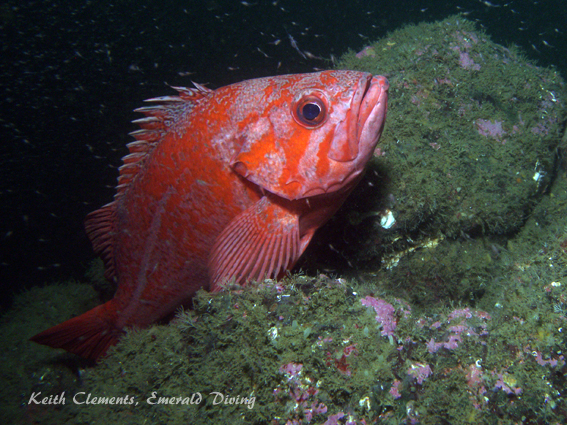

©2010 Emerald Diving, All Rights Reserved
Dive Reports
Emerald Diving
Explore the coastal and inland waters of
Washington and BC
Explore the coastal and inland waters of
Washington and BC
Emerald Diving
Explore the coastal and inland waters of
Washington and BC
Explore the coastal and inland waters of
Washington and BC
Emerald Diving
Explore the coastal and inland waters of
Washington and BC
Explore the coastal and inland waters of
Washington and BC


The strong currents inherent to the Puget Sound area are obviously driven by the lunar cycle. This means that every other week the currents during the day tend to be stronger than the week prior. The cycling current intensity creates a conundrum for Northwest divers - where can I go when I want to do some really interesting diving during those weekends when currents are intense? Once good answer is usually Hood Canal.
The narrow entrance to Hood Canal restricts the tidal driven water exchange in this long, fjord-like body of water. This results in light to moderate tidal currents in the mid and south end of the canal - even during time periods of heavy tidal exchanges. As currents on this particular weekend were whacked-out, Clint and I decided that it was time for our annual pilgrimage to Seabeck for some easy diving. We also hoped that most boaters this weekend would be on Lake Washington enjoying the Blue Angels and other Seafair festivities.
We launched at low tide, which can be problematic at shallow Seabeck boat ramp, and cruised 12 miles to the south to Flagpole Point. I was so entralled with the first dive that I decided to do a second here as well. We had the site to ourselves and underwater visibility was in the 30+ foot range.
I noted that many of the cloud sponges on the north side of the wall actually appear to be in better health than years prior. However, the cloud sponges on the south side of the wall seem to be in rapid decline.
Part of my agenda for the day was to get some shots of seawhips for the Species Index as I have seen seawhips at this site before. Since seawhips can't "run" to far, I presumed there was a good chance I could find them again. I found a wonderful small garden of seawhips just south of the wall in 85 feet of water. I also found juvenile seawhips around the rocky mound above the wall.
The narrow entrance to Hood Canal restricts the tidal driven water exchange in this long, fjord-like body of water. This results in light to moderate tidal currents in the mid and south end of the canal - even during time periods of heavy tidal exchanges. As currents on this particular weekend were whacked-out, Clint and I decided that it was time for our annual pilgrimage to Seabeck for some easy diving. We also hoped that most boaters this weekend would be on Lake Washington enjoying the Blue Angels and other Seafair festivities.
We launched at low tide, which can be problematic at shallow Seabeck boat ramp, and cruised 12 miles to the south to Flagpole Point. I was so entralled with the first dive that I decided to do a second here as well. We had the site to ourselves and underwater visibility was in the 30+ foot range.
I noted that many of the cloud sponges on the north side of the wall actually appear to be in better health than years prior. However, the cloud sponges on the south side of the wall seem to be in rapid decline.
Part of my agenda for the day was to get some shots of seawhips for the Species Index as I have seen seawhips at this site before. Since seawhips can't "run" to far, I presumed there was a good chance I could find them again. I found a wonderful small garden of seawhips just south of the wall in 85 feet of water. I also found juvenile seawhips around the rocky mound above the wall.
Hood Canal: August 2, 2008

A friendly greeting only a diver - or possibly another wolf eel - would appreciate. Many wolf eels call this reef home.
Rockfish populations near the wall were relatively healthy compared to years past. Most noticeable were some rather large vermilion rockfish that followed me around for a good part of my dive. Clint and I readily found black, copper, quillback, Puget Sound, and yellowtail rockfish around the reef.
Jelly season is also in full swing, and we saw some monsters. I have been stung by the almost invisible long trailing tentacles of lion's mane jellyfish in this area before so was somewhat cautious. Although I only briefly saw one lion's mane, I did catch up to the largest fried-egg jelly I have seen to date.
Red flabellina nudibranchs were everywhere at Flagpole, which is usually the case this time of year. I also found an incredibly vibrant white lined dirona near the rock of the rock mound.
Jelly season is also in full swing, and we saw some monsters. I have been stung by the almost invisible long trailing tentacles of lion's mane jellyfish in this area before so was somewhat cautious. Although I only briefly saw one lion's mane, I did catch up to the largest fried-egg jelly I have seen to date.
Red flabellina nudibranchs were everywhere at Flagpole, which is usually the case this time of year. I also found an incredibly vibrant white lined dirona near the rock of the rock mound.

Macro shot of the polyps on a seawhip
A magnificent fried-egg jellyfish at Flagpole Point. This one is huge - it's bell spans 18".


White lined dirona - Flagpole Point. This one exhibits uncharacteristically striking colors, which is probably a result of diet.

Vermilion rockfish - Pulali Wall.
Note the krill at the top of the pic.
Note the krill at the top of the pic.



"Juvenile" seawhip - 8" tall
"Adult" seawhip - 48" tall
After a couple of dives at Flagpole, we headed 15 miles to the north to finish the day at Pulali Wall where we had another excellent dive. My intent was to get a good pic of a giant nudibranch for the Species Index. In years past, I have seen several giant nudibranchs hunting tube-dwelling nudibranch in the sand channel on the north side of the main wall. After quite a bit of hunting I finally found my quarry - a huge specimen that was over 8" in length.
Vast schools of krill infested parts of the wall at Pulali. If you look closely, you can see the krill buzzing around the vermilion rockfish in the pic below.
Hood Canal diving never has the adventurous appeal of Cape Flattery or the San Juans. However, is is fun and relaxing diving - and a chance to see some creature that I normally don't get to see elsewhere. This day trip resulted in some great dives, 13 new species being added to the Species Index and some nice additions to the photo gallery.
Vast schools of krill infested parts of the wall at Pulali. If you look closely, you can see the krill buzzing around the vermilion rockfish in the pic below.
Hood Canal diving never has the adventurous appeal of Cape Flattery or the San Juans. However, is is fun and relaxing diving - and a chance to see some creature that I normally don't get to see elsewhere. This day trip resulted in some great dives, 13 new species being added to the Species Index and some nice additions to the photo gallery.
The flamboyant giant nudibranch, Dendrontus iris, hunting tube-dwelling anemones near Pulali Wall